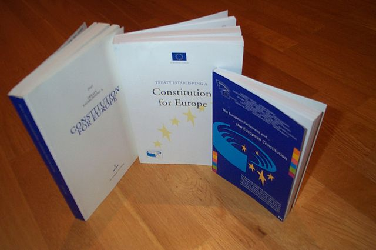
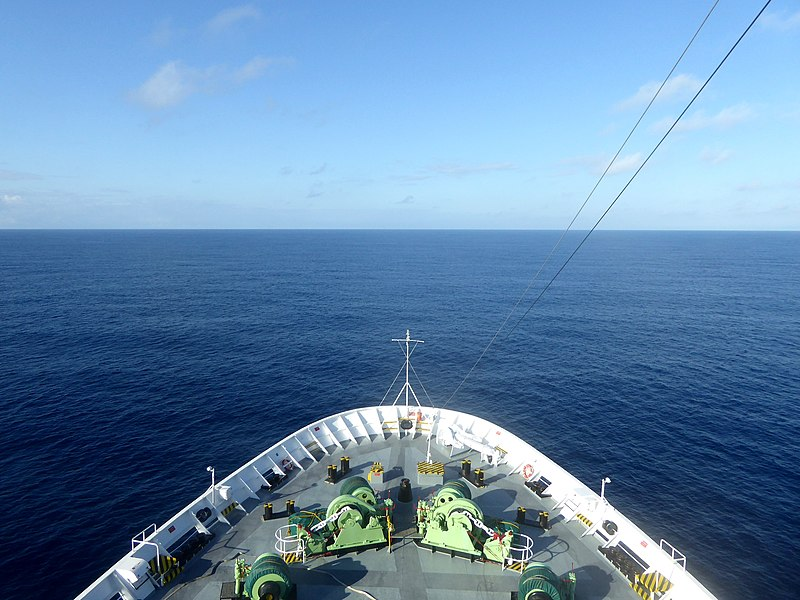
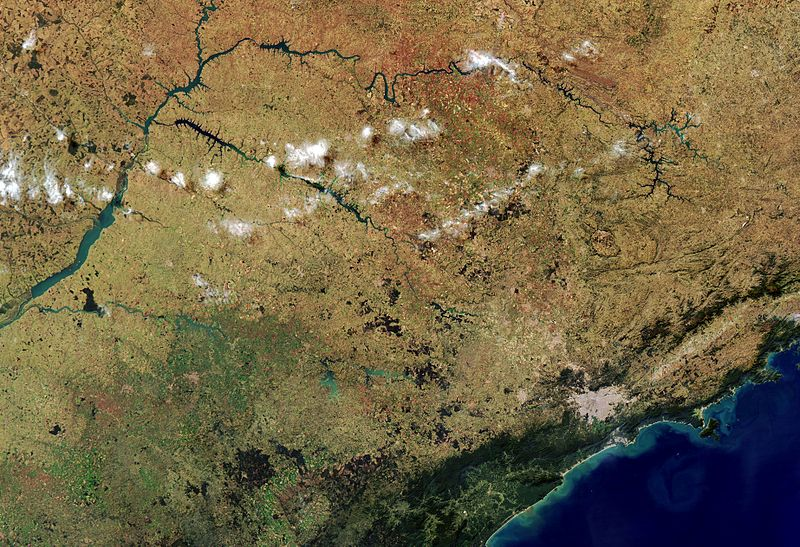

Revisão bibliográfica complexa sobre estudos recentes que tratam do papel das instituições internacionais na promoção da democracia.
Partindo das considerações obtidas através da literatura levantada, são identificadas as principais lacunas existentes
nos trabalhos em questão, sugerindo, ao final, uma agenda de pesquisa para trabalhos futuros.

A pesquisa em questão se insere junto a estudos sobre construção de regiões,
entendidas aqui como construções cognitivas atreladas a projetos políticos e manifestadas por meio de discursos.
Trabalhos nessa mesma linha teórica já foram desenvolvidos sobre o Atlântico Sul no passado,
mas sempre limitados à perspectiva da política externa brasileira enquanto potencial agente construtor da região sul-atlântica,
ignorando a resposta dos demais Estados ao projeto.
O artigo busca assim explorar a resposta internacional para esse projeto brasileiro de construção regional sul-atlântico.

O artigo propõe algumas reflexões sobre os achados teóricos da Abordagem de Construção Regional defendida por Iver Neumann, notando que,
embora sua abordagem ontológica seja a mais adequada para estudar processos de construção regional no campo das Relações Internacionais,
seus aspectos metodológicos foram pouco desenvolvidos até o momento. É apresentado um refinamento teórico da abordagem defendida por Neumann,
focando em auxiliar o desenvolvimento de metodologias mais consistentes para pesquisas que a apliquem,
sugerindo quatro dimensões de análise para estudar narrativas regionais.

Capítulo 4 da obra "Os Complexos Regionais de Segurança no Século XXI: conflitos, agendas e ameaças" (2016).